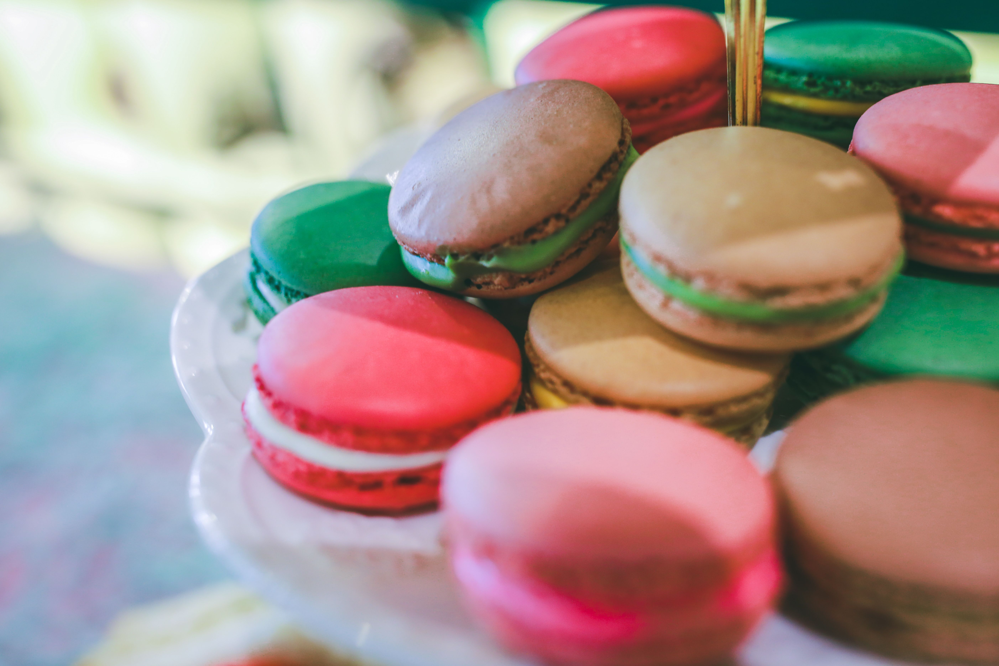

Macaroon
Home

This is a sweet and chewy macaroon recipe that is perfect to impress any guests that come knocking at your door!
Ingredients
Macaroon Shells
- 105 gram egg white, aged
- 144 gram almond flour
- 105 gram granulated sugar
- 125 gram powdered sugar
- 1 tsp food coloring
Macaroon Filling
- 113 gram unsalted butter, softened
- 140 gram powdered sugar
- 1/2 tsp vanilla extract
Steps
- Separate the egg whites into a pull and let them age uncovered at room temperature for 24 hours.
- Line two large baking sheets with parchment paper or specialized macaroon mats.
- Sift the almond flour and powdered sugar together to remove any lumps into adry-ingredient bowl.
- In a stand mixer, mix the egg whites until they foam and then add your granulated sugar.
- Whip for at least 6 minutes to form stiff peaks of your meringue.
- Add any desired food coloring to the meringue at this stage.
- Remove from the mixer and sift in your almound flour mixture into the meringue.
- Take a spatula and fold gently utnil the mixture comes off the spatula in ribbons
- Transfer the batter into a piping bag fitted with a round tip and pipe small rounds onto the prepared baking sheets.
- Tap the baking sheets on the counter to release any air bubbles and let them sit at room temperature for 30-60 minutes to form a skin.
- Bake in a preheated oven at 325°F for 10-12 minutes, then let them cool completely on the baking sheets.
- Prepare the filling by beating the softened butter, powdered sugar, and vanilla extract in the stand mixer until smooth and creamy.
- Once the macaroon shells are cooled, pipe the filling onto one shell and sandwich with another shell.
- Repeat the process until all macaroon shells are filled and sandwiched.
- Store the macaroons in the refrigerator for at least 24 hours to allow the flavors to meld together before serving.
- Serve the macaroons chilled and enjoy!